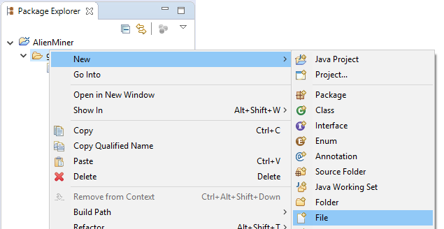
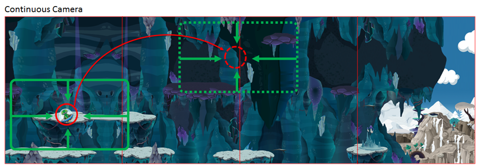
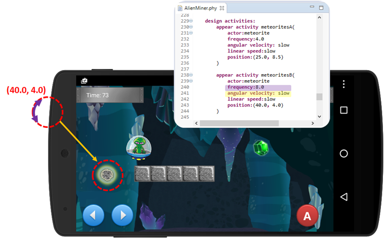
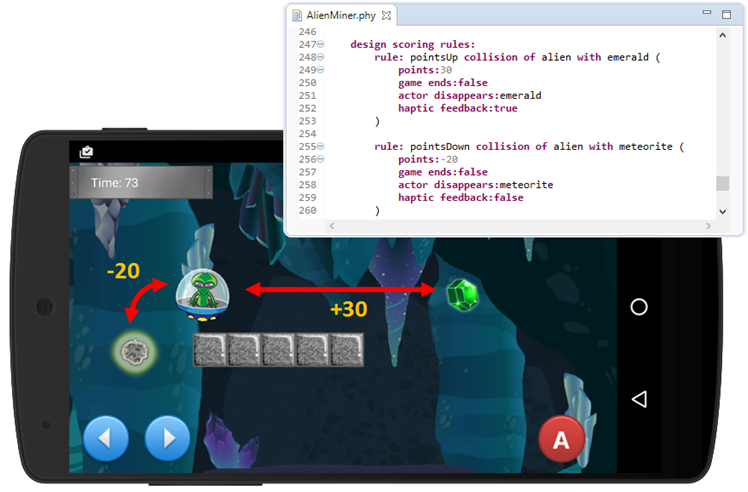
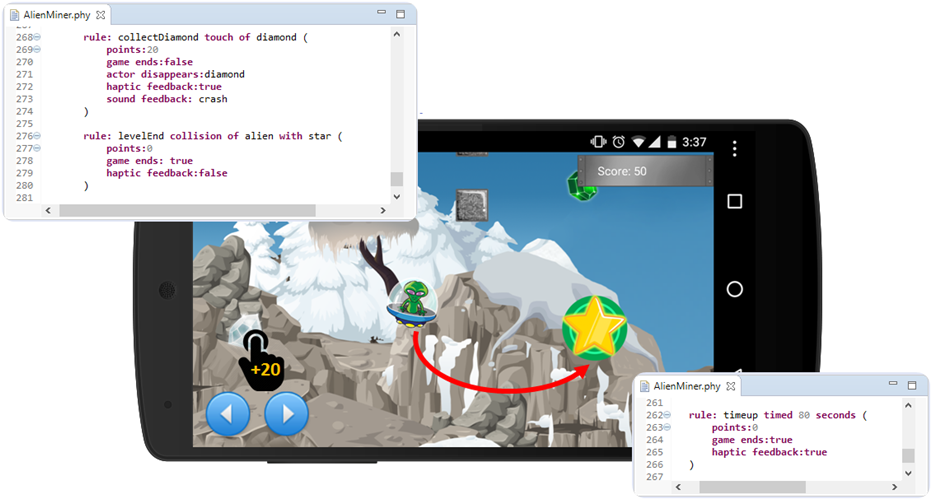
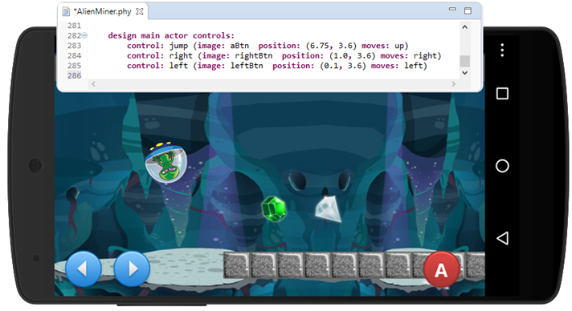

In this tutorial we will explore the design and generation of Alien Miner, a physics-based platformer game. The main actor of the game is an adventurous alien whose primary mission is to collect precious gems while exploring the galaxy. In this version of Alien Miner the main actor of the game is found inside a cave with hidden treasures and dangerous meteorites. The goal of the game is to guide the alien through the cave while collecting all its precious treasures. The alien should avoid the meteorites at all cost.
For every emerald and diamond collected, the player will receive 20 and 30 points respectively. While emeralds are collected when the alien touches them, diamonds are collected when the player taps on their screen position. If the alien gets hit by a meteorite, the player will lose 20 points. The game has a total duration of 120 seconds. However, if the player reaches the teleportation portal at the need of the level, the game will come to an end.
In this instance of Alien Miner the main actor of the game is controlled using on-screen controls, i.e. three buttons specify the vertical and horizontal acceleration of the alien. Let us briefly guide you through the development process for this game using PhyDSL.
div
Deeloping a Game
Creating a game in PhyDSL is a 6-step process. The following sections will explore each step.
1. Creating a Game Project
The first step in the creation of a game with PhyDSL is the creation of a gameplay design file. To begin, you need to open your Eclipse distribution with the PhyDSL and Android Development Tools (ADT) plugins. If you have not yet installed any of the plugins, please go to the download section in this site.
1. On a clean workspace right click on ‘package explorer’ > New > Project ... > General > Project > Next > Give the project a name such as ‘AlienMiner’ > Click Finish.
2. Create an empty folder in the root of the newly created project. Give it a name such as ‘games’
3. Create a PhyDSL gameplay design file by right clicking on the 'games' folder > New> File> Give the file a name such as AlienMiner.phy. It is important that all the gameplay design files have the '.phy' extension in order for the PhyDSL plugin to recognize them.
4. If this is your first time creating a '.phy' file, Eclipse will display a dialog asking if you want to switch to an XText perspective > Click Yes.

2. Creating a Gameplay Design File
In order to create a game definition file you first need to choose all the graphical and sound artifacts that will be part of your game. This includes all the skins for the actors of the game, the game sound effects, and its background image. In order to manage memory more efficiently, you can split large background images into slices of equal size. The name of the slices should include a consecutive number index (please see the the example below). Later in this tutorial we will explain how slices can be used in order to create a memory efficient game. All the artifacts need to be stored in the “artifacts” directory of the generator. If you have not downloaded the PhyDSL generator please go to the download page in this site.
2.1. Declaring The Game Types
PhyDSL offers an enumeration-based type system that allows developers to specify concrete values for a wide range of variables to be used throughout the game.
The type system includes physical properties that will be used in the creation of the game actors, such as “elasticity”, “friction”, “density”, and “size”. Furthermore, vector and scalar variables can be declared such as “linear speed”, “angular velocity”, “gravity” and “acceleration force.” These variables will be used to specify the properties of the world of the game, the actions that controls perform over the main actor of the game, and the properties of appearance events in the game. Later in this tutorial will use all of them, so please sit tight and continue reading.
Resources can be used in order to access the graphical and sound artifacts of the game. Each resource variable specifies the name of a concrete file in the ‘artifacts’ directory of the generator. PhyDSL treats graphical and sound artifacts indistinctively.
You can reuse the type section of the definition file in your games. Depending on the device where you will deploy your game, you can experiment and adapt concrete values for the type system that you want to use in your game.
2.2 Defining The Game Actors
The second step on the creation of the game play design is to design the actors of the game. In PhyDSL actors are defined using eight different properties. The first three, namely “density”, “elasticity” and “friction” specify how each actor will behave in the physics simulationof the game, e.g. collisions and gravity forces.
The “image”, “size” and “shape” properties determine the look and feel of the actor. Indeed, all the properties assume the concrete values specified in the type section defined above (Section 2.1.) Furthermore, the shape property can only assume two values, namely “circle” and “square”. Depending on the desired visual characteristics of each actor, the shape and size definitions will help PhyDSL to more precisely model the in the behaviours of the actors in the physics simulation of the game.
The property “mobility” can hold two concrete values, namely “dynamic” and “static”. This property specifies whether an actor will be able to move around the physics world of the game, of if it is going to be anchored to a specify position. In Alien Miner, for example, both the “emerald” and the “brick” actors are static. Considering the gameplay design described above, we would like both actors to stay in the same place throughout the entire duration of the game; while the emeralds are actors that will be collected by the alien and should be placed in a specific place in the the game, the bricks are the building blocks for the platforms that define the strcuture of the game. In effect, static actors are not influenced by other forces in the game, including gravity or collision events, i.e. they will not move if another actor collides with them, and they are not affected by the gfravity of the world.
Finally, the “type” property can assume three concrete values “abstract”, “concrete” or “main actor”.
Abstract Actors:
Abstract actors do not interact with any other actor in the game. They can be used as place holders that help modeling the graphical environment of the world. As a concrete example, if a developer wants to add a tree as a part of the background ambience of the game, she can do so using an abstract actor with the skin of a tree. Since no elements will interact with it, the tree will blend with the background image of the world. In effect, the physical properties of an abstract actor are ignored by the physics engine. It is important to mention that even though abstract actors are not considered in the physics simulation of a game, they can trigger touch events.
In the case of Alien Miner, diamonds are abstract actors. The idea behind this design decision is to make diamonds “transparent” for the physics engine, however, we would like player to be able to hit them using the touch capabilities of her device in order to collect them. Later in this tutorial we will explain how this is done.
Concrete Actors:
Concrete actors are the most common actors in most gameplay designs. They observe all the physical interactions supported by the physics engine, such as collisions and gravity forces
Main Actor:
The main actor of the game has the same type properties present in other concrete actors. However, labelling an actor as a main actor helps PhyDSL to provide complex camera behaviours, and on-screen controls. Later in this tutorial we will see how a game can be designed to have a camera that follows the main actor of the game using different strategies. Camera behaviours are only linked to the main actor of the game. Furthermore, we will explore how a developer may opt for having on-screen controls like buttons and keypads, or interactive elements that manipulate the position of the main actor. It is important to mention that not all games need a main actor. For example, games like Candy Crush or Bejewelled don not have one. It is also important to mention that in the case of having declared multiple actors as main actor, PhyDSL will only treat the first of them as such.
Auto-completition and Static Checking
You can use the syntax directed editor to help you during the construction of a gameplay design. At any point you can use CTR+SPACE to access the auto-competition features of the editor. Moreover, if there is any syntactical error in the file, the editor will also let you know by highlighting the errors in red.
2.3 Defining The Game Layout and Environment
The third step on the creation of a gameplay design is to define the layout and environment of the game.
PhyDSL uses a floating point 2D grid-based coordinate system to manage the location of the actors in the world of a game. Developers can create different layouts and place actors within the world of the game to create engaging and challenging experiences.
As shown below the origin of PhyDSL’s coordinate system is in the upper-left corner of the world. Furthermore, the size of the world is determined by the size of its background.
In Alien Miner, we are interested in building a variety of platforms using “brick” actors. Furthermore, we would like to place assorted gems in different locations of the world to provide rewards for the player.
In Alien Miner the “alien” actor is placed in the coordinate (x=1.0, y=1.0). Please notice that since the “alien” actor is "mobile", it will be affected by collisions and the gravitational forces of the game simulation as soon as the game starts.
The gravity of the world can be defined in the environment section of the file using the property “gravity”. In this case, the gravity of the planet where the alien is located is equivalent to the one on Earth’s moon.
Setting up The Game Background:
The environment section also contains the property “background” which defines the background image of the game. Since Alien Miner is a platformer that takes place inside of a cave, a large horizontal background is suitable to provide a deep sense of immersion for the player. In order to specify the background of a game, two variables are used, namely “image” and “segments”. The “image” variable specifies the name of the background slices provided in the artifacts directory without their numerical identifier. The “segments” variable helps PhyDSL to find the number of slices that comprise the background image. PhyDSL will always horizontally assemble the backgorund slices provided by the developer in execution time.
A developer may choose having a single slice for a large background image. However, our experience has revealed that this strategy causes a big memory overhead. Indeed, single-slice backgrounds need to be completely loaded during the initialization of the game, which causes jittery gameplay experiences.
In the environment section, the properties “touch screen” can be set to “true” or “false” in order to allow the player to interact with the mobile actors of the game using touch gestures (in touch enabled devices). In Alien Miner this variable is set to false. In effect, the main controllers for Alien Miner will be in the form of on-screen controls (as presented in Section 2.6).
Setting up The Game Camera::
The environment section also includes the “camera” property. This property captures how the developer wants to configure the camera behaviours of the game. The “camera” property can be set in three possible ways: “continuous”, “discrete” or “none”.
If the camera property is set to “none”, the game will present only the first frame of the background loaded to the user. This setting is appropriate for single scene games that conform to gameplay designs such as in Candy Crush or other board-based games. However, more complex camera behaviours are needed in order to create engaging gameplay designs. PhyDSL provides two concrete behaviours that can be specified for this purpose.
A "continuous" camera will follow the main actor of the game while making sure this is located at the center of the player’s screen. This type of camera provides a continuous flow of movement through the world of the game. We have chosen a continuous camera behaviour for Alien Miner.

On the other hand a discrete camera will swap scenes of the world as the actor approaches its boundaries. Indeed, a discrete camera can be used for highly detailed maps and, with high map-size-to-actors size ratio. In this case, the scene swapping will not be frequent, and will not distract the player.
2.4. Defining The Game Activities
The fourth step on the creation of a gameplay design is to optionally set up the activities of the game. PhyDSL activities can be used to model game events that are not directly triggered by the player’s actions. Currently, only “appear activities” are supported on PhyDSL, however we are working on more!
Appear Activities model the iterative appearance of a given actor dictated by time. Appear Activities can be defined by means of providing the activity with a "name" along with five different properties, namely the “actor” of interest, and the “frequency”, “angular velocity”, “linear speed”, and the “position” of the appearance event.
In Alien Miner two appearance events are defined to represent different places in the world of the game where obstacles will be present. In these two locations meteorites will appear every 4 and 8 seconds as to provide a challenging obstacle for the player.

2.5. Defining The Game Scoring Rules
The fifth step on the creation of a gameplay design is to define the rewards and penalties of the game. PhyDSL enables developers to define three types of triggers that modify the state of the game for this purpose, namely touch-based, collision-based, and time-based scoring rules.


The signature of each scoring rule is different depending on its type. “Collision Rules” include the name of the actors that, upon collision, will activate or trigger the scoring rule. In turn, “Touch Rules” are defined by specifying the name of the actor that will trigger the rule if touched by the player. Finally, “Time rules” are specified by setting the total time in seconds that will set a countdown timer which zero-event will trigger the rule.
All scoring rules include three mandatory properties regardless of their type, namely “points”, “game ends”, and “haptic feedback”. The property “points” can positively or negatively affect the point count of the game. The property “game ends” indicates whether the rule will end the game immediately after the rule is triggered. Furthermore, the variable “haptic feedback” indicates whether the device will vibrate if the rule is triggered.
Scoring rules include two optional properties, namely “actor disappears” and “sound feedback”. The former indicates whether there is an actor involved in the signature of the rule that will disappear if the rule is triggered. For example, in the case of Alien Miner, meteorites will disappear if they collide with the Alien. Moreover, gems will disappear if they are collected (either by collision with the "alien" or touch event on the screen). Finally, the “sound feedback” property specifies whether the game will use a sound artifact to provide auditory feedback to the player once a rule is triggered. In the case of Alien Miner a crashing sound will provide feedback to the collection of a diamond.
2.5. Defining The Game Controls
The sixth and final step on the creation of a gameplay design is to optionally specify a set of controls for the main actor of the game. This section is only available when the game has a main actor, and it is particularly suitable for games in which touchscreen capabilities are disabled (see Section 2.3)

Controls are on-screen touch-enabled elements. For their definition they require a "name" and three properties, namely “image” which determines how the control element will look like on screen, “position”, and “moves” which specifies the vectorial force that will be applied to the main actor when the control is touched.
In Alien Miner three controls are placed to manipulate the main actor in three different directions: left (left arrow), right (right arrow), and upwards (“A” button). Please take see Section 2.1. if you want to study how forces are defined.
3. Exporting The Game Model
Once you have written your gameplay design file you will have to generate a game model that will be consumed by the code generator. This will ultimately generate the project of the game ready to be executed.
Note: The idea of having an independent generator, i.e. not integrated with Eclipse or other development environments, is to be flexible in front of multiple editors that can produce gamplay desing specifications. Since the PhyDSL editor is based on XText and EMF technologies, multiple graphical and textual editors can be generated automatially. Currently, the PhyDSL textual editor is provided as an Eclipse plugin. However, we will soon release its browser based and IntelliJ versions.
In order to generate the game model, please right click on your ".phy" file > PhyDSL Modeling > Generate Game Model.
Next, a ‘.xmi’ game representation of the game will appear next to the game definition file. This step needs to be repeated every time a modification is done to the gameplay design file. Please notice that you have to save the ".phy" file every time before generating a game model.
4. Running The PhyDSL Generation Engine
To generate the Eclipse Android project that conforms to the gameplay design file:
1. Double click on the PhyDSL Generator file.
2. In Windows, please specify the gameplay design file using a relative path to the Jar. In Mac OS, you can select and specify the file using the generators explorer (click on “Select”). Finally, select an empty output directory, and click “Generate Project”.
5. Importing The Generated Android Project
The generated project can be imported into Eclipse using the regular project import process. In Eclipse please > right click on the package explore > Import... > Android> Existinf Android Code Into Workspace > Find the location of the generated project > Click Finish.
Once the project is imported into Eclipse you can modify the gameplay design file and regenerate the game. The imported version in Eclipse will be updated automatically.
We are currently working on integrating Android Studio generation capabilities to PhyDSL.
6. Running The Generated Android Project
If you see errors in the project please make sure the Android Compiler is set properly in the configuration of the project. You can also try cleaning and building the project. To run the game you can use an emulator or a real Android device.